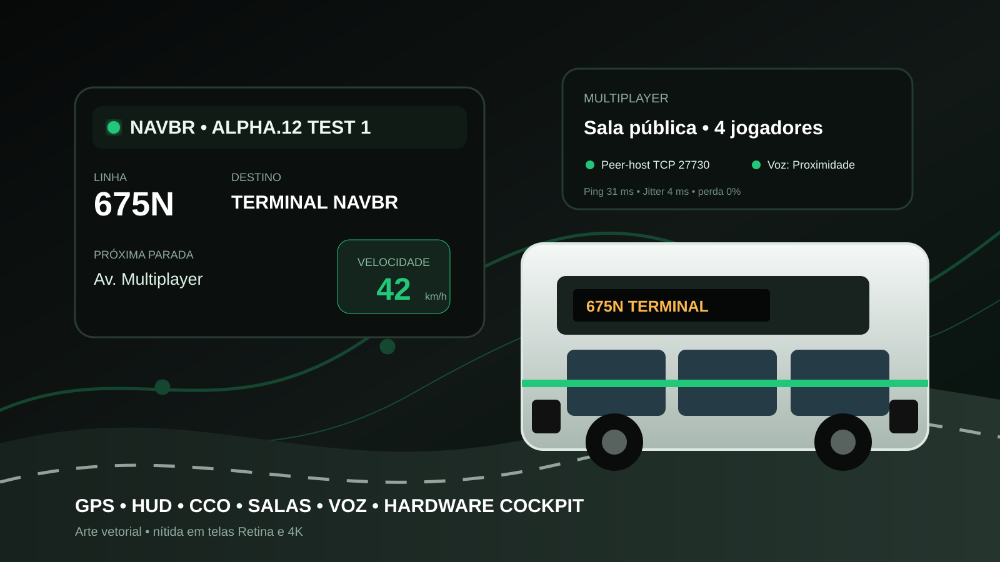
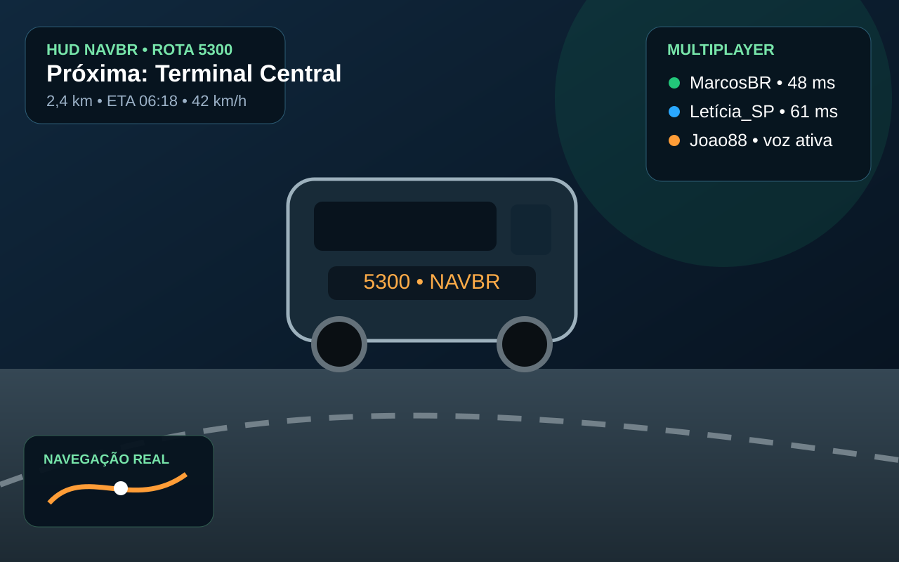
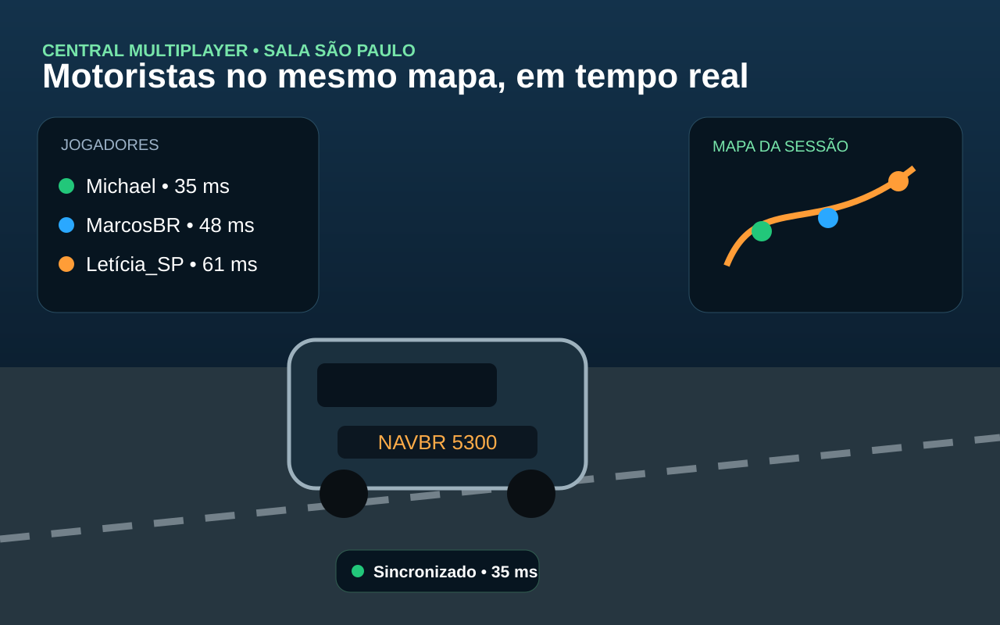
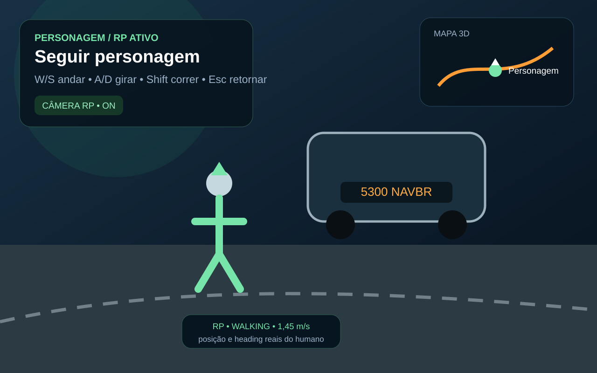

Multiplayer integrado
Salas, presença, chat, voz e telemetria compartilhando o mesmo estado operacional.
Um projeto independente que conecta motoristas, mapa, voz, HUD, operação e recursos experimentais de RP em uma interface moderna integrada ao OMSI.

O NavBR reúne multiplayer e ferramentas operacionais sem substituir o simulador. O OMSI continua sendo a autoridade da condução.
Salas, presença, chat, voz e telemetria compartilhando o mesmo estado operacional.
Roadmap, rota, paradas e retorno à rota usando dados do mapa carregado no OMSI.
Painéis, HUD configurável, CCO, perfil, empresa e ferramentas para condução.
Plugin Bridge e interop x86 para recursos experimentais que precisam conversar diretamente com o OMSI.
As imagens abaixo são conceitos gerados por IA e não representam capturas da implementação atual.

CONCEITO IAPróxima parada, rota, velocidade e estado multiplayer.

CONCEITO IAPresença, voz, sala e posições sincronizadas.

CONCEITO IAConceito de personagem e acompanhamento no mapa.
Cada modo tem um objetivo claro, com diagnósticos de rede separados para evitar mensagens enganosas.
Conecte-se ao servidor oficial de testes sem hospedar uma sala no próprio PC.
Crie uma sessão na mesma rede local para validar multiplayer entre máquinas próximas.
Hospede a sessão no seu PC e permita conexões externas quando a rede estiver configurada.
O NavBR continua em Alpha. Recursos experimentais são identificados claramente.
Para jogar e testar normalmente, use o EXE standalone. Os demais pacotes ficam como opções específicas.
Pesquise por versão ou filtre por Alpha. Os downloads apontam para os arquivos originais do GitHub Releases.
O foco atual é corrigir e validar o que já existe antes de ampliar o produto.
O NavBR é um projeto independente. Contribuições via Pix são voluntárias e não desbloqueiam recursos exclusivos.